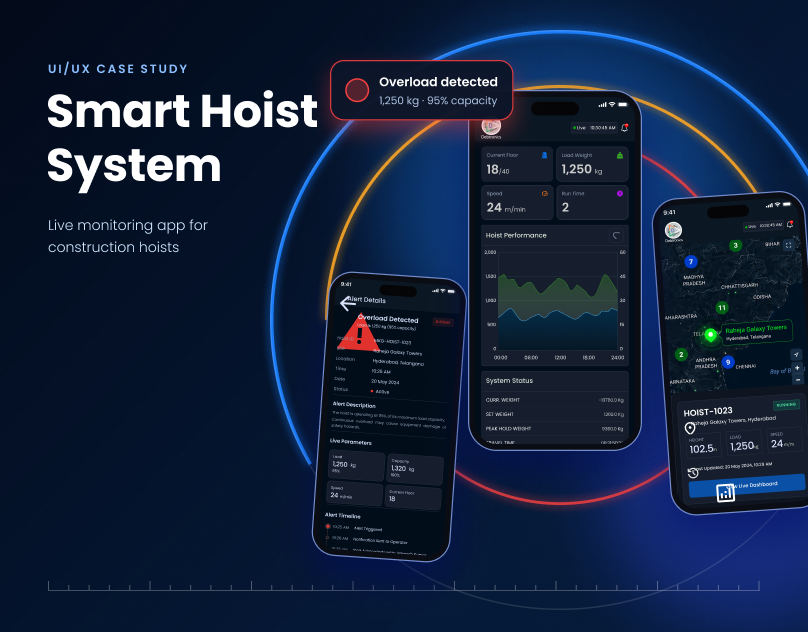

UX case study
Smart Hoist System
A mobile control app for monitoring construction hoists in real time: live load, alerts, maps and reports.

The problem
Why it needed designing
Construction hoists carry people and material up tall buildings. Engineers need to know load, speed, power and fault status at once, but data sits in separate panels and reports, and alerts can be missed.
The solution
What I designed
Smart Hoist System puts live parameters, a hoist map, severity-ranked alerts and scheduled reports into one mobile app, so an engineer can see problems and act on them from anywhere on site.
Who it is for
Systems engineer
Monitors hoists remotely, responds to alerts and needs trustworthy live numbers at a glance.
Site / safety supervisor
Needs to know which hoist has a problem, how severe it is and what has already been handled.
Design goals
Critical information first, severity by colour and label (never colour alone), dense data kept readable on a phone.
Key design decisions
Status at the top
Active alert counts and key live values (load, speed, power) are visible without scrolling.
Triage before action
Alerts are filtered by Active, Acknowledged and Resolved, with a Critical label and a plain-language message.
Clustered hoist map
Hoists are grouped on a map with counts, and one tap opens a hoist’s live dashboard.
Selected screens
Outcome
Login, dashboard, live hoist map, alerts with filters and details, reports with scheduling and a profile screen in one consistent dark interface.
What I would do next
Test alert triage with site engineers, add push notifications for critical alerts and design a tablet view for control rooms.